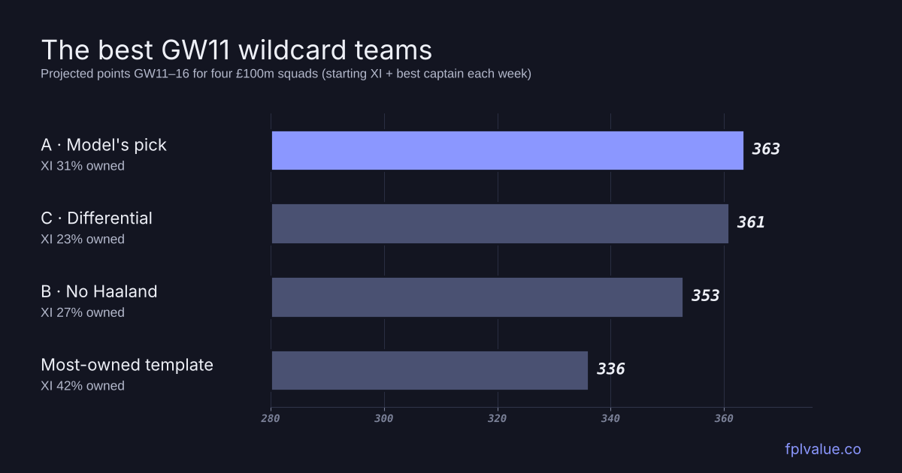

The best GW11 wildcard teams
The international break is the most popular time of the season to wildcard. There are eleven days until the GW11 deadline (Saturday 21 November at 11:00 UK time), injuries have had time to settle, and the fixture list is clear through to Christmas. We asked the site's projection model, refreshed with GW10's results, for the best £100m squad over the next six gameweeks (GW11–16). Then we built two alternatives: one without Haaland, and one that avoids the template.

The model's wildcard
This is the best £100m squad that the model can find for GW11–16, picked by the same optimiser as the one on the projections page. The numbers on each shirt are the player's projected points over the six weeks. The squad's total is 363 points, counting the best captain each week.
Squad A: the model's pick 3-5-2 · £99.9m · 363 pts
The shape is the one the model has liked all season. There's one premium, Haaland, and the rest of the money goes into players around £5–8m who start every week and have good fixtures. Gabriel (£8.1m) is the most expensive defender in the game, and the model still thinks he's worth it. At 32.6 points he projects higher than every midfielder. Arsenal and Brighton provide three players each, and Bournemouth and Leeds two.
The bench is cheap but useful. Silva (26.9) and Calvert-Lewin (26.8) would both start in most squads, which matters when a starter gets injured or rotated. Haaland is the captain in 5 of the six weeks, with Mbeumo in GW12 the exception.
| Player | GW11–16 | Fixtures (model difficulty) |
|---|---|---|
| RayaGKP · ARS · £6.2m · 48% | 23.3 | NEWAMCIHBREATOTABOUHMUNH |
| GabrielDEF · ARS · £8.1m · 26% | 32.6 | NEWAMCIHBREATOTABOUHMUNH |
| De CuyperDEF · BHA · £5.5m · 48% | 28.1 | HULANEWHBOUANFOAEVEHIPSH |
| Van HeckeDEF · TOT · £5.1m · 14% | 26.9 | IPSHSUNAFULHARSHHULALIVA |
| MbeumoMID · MUN · £7.9m · 19% | 30.5 | LIVABREHNEWACOVHCRYAARSA |
| GroßMID · BHA · £6.3m · 48% | 30.5 | HULANEWHBOUANFOAEVEHIPSH |
| TavernierMID · BOU · £6.7m · 31% | 29.8 | NFOHFULABHAHHULHARSACOVH |
| ØdegaardMID · ARS · £6.7m · 16% | 27.8 | NEWAMCIHBREATOTABOUHMUNH |
| E.Le FéeMID · SUN · £5.7m · 2.7% | 27.6 | AVLATOTHLIVANEWANFOHCRYH |
| HaalandFWD · MCI · £15.8m · 79% | 39.0 | FULHARSALEEHBREACHEHHULH |
| BarryFWD · EVE · £5.7m · 10% | 27.5 | BREALIVHAVLAFULHBHAANFOA |
| Verbruggen benchGKP · BHA · £4.6m · 24% | 21.1 | HULANEWHBOUANFOAEVEHIPSH |
| Silva benchDEF · BOU · £5.1m · 3.6% | 26.9 | NFOHFULABHAHHULHARSACOVH |
| Justin benchDEF · LEE · £4.5m · 2.4% | 23.1 | CHEACOVHMCIAIPSHLIVAFULH |
| Calvert-Lewin benchFWD · LEE · £6.0m · 18% | 26.8 | CHEACOVHMCIAIPSHLIVAFULH |
Which picks matter
A wildcard squad from an optimiser looks precise, but a lot of these picks are close calls. To see which ones aren't, we took each starter out in turn, let the optimiser rebuild the best squad without him, and measured how many points it lost over the six weeks.
| Without… | Points lost | What comes in |
|---|---|---|
| HaalandFWD · MCI · £15.8m | 10.7 | B.Fernandes, Isak, Hill |
| GroßMID · BHA · £6.3m | 3.4 | Hill, Rudoni |
| TavernierMID · BOU · £6.7m | 1.9 | Isak, Robertson, Rudoni, McGinn |
| GabrielDEF · ARS · £8.1m | 1.8 | B.Fernandes, Kinsky, Robertson, Rudoni |
| RayaGKP · ARS · £6.2m | 1.2 | Isak, Kinsky, Konsa, Rudoni |
| MbeumoMID · MUN · £7.9m | 1.2 | B.Fernandes, Kinsky, Rudoni |
| ØdegaardMID · ARS · £6.7m | 0.7 | Hill, Rudoni |
| E.Le FéeMID · SUN · £5.7m | 0.6 | Hill, Kinsky, Rudoni |
| BarryFWD · EVE · £5.7m | 0.4 | Hill, Delap |
| De CuyperDEF · BHA · £5.5m | 0.2 | Isak, Kinsky, Robertson, Rudoni |
| Van HeckeDEF · TOT · £5.1m | 0.0 | Hill, Kinsky, Robertson |
Only two players are worth more than a couple of points over six weeks. Losing Haaland costs 11 points, most of it captaincy, and Groß costs 3, because nobody else at £6.3m projects close to him. Tavernier and Gabriel are next at about two points each. Everyone else has a replacement within about a point. For Ødegaard, E.Le Fée, Barry, De Cuyper and Van Hecke the gap is under a point. That's about a sixth of a point a week, well inside the model's margin of error. So if you'd rather have a different keeper or a different budget defender, go ahead. The core you want is Haaland and Groß, then Tavernier and Gabriel.
Squad B: without Haaland
Haaland has 68 points this season, against 85 at the same stage last year, and plenty of managers are wondering about life without him. The model's answer is that it costs less than you might think. Its best squad without him totals 353, 11 points behind Squad A over six weeks, or about 1.8 a week. Most of that is the captaincy.
Squad B: no Haaland 3-5-2 · £99.4m · 353 pts
His £15.8m goes on B.Fernandes (£11.6m) and Isak (£9.3m), with Hill also coming in. Fernandes becomes the main captain. The model has him at 32.2 points, the highest of any midfielder, because he takes United's penalties and the model expects him to start (he missed GW8 completely). If you go this way, you are taking a real risk. Haaland is in 79% of squads, so every big Haaland week costs you rank. On these numbers, though, it's a reasonable risk, not a reckless one.
Squad C: the differential
If you're chasing rank, you want points from players few others own. For this squad we told the optimiser to treat each percentage point of ownership as a small cost. Its starting XI averages 23% ownership, against 31% for Squad A, and it projects 361, only 3 points less.
Squad C: differential 3-4-3 · £99.9m · 361 pts
It keeps the picks that matter. Haaland, Groß, Tavernier and Gabriel are too good to give up for a few points of ownership. The changes are in the places where Squad A's picks were close calls. Leeds keeper Trafford (6.4% owned) starts instead of Raya (48%). Bournemouth's Hill (3.0%) and Silva (3.6%) start in defence instead of De Cuyper, who is in nearly half of all squads and projects only about a point more. Isak comes in up front for the money saved, with Ødegaard and Calvert-Lewin dropping out. Because so many of the picks in Squad A were close calls, the differential squad costs very little.
What the template is missing
For comparison, we built the most-owned legal squad under £100m and let the model pick its best XI. It projects 336, which is 27 points behind Squad A over six weeks. Two of its bench spots are wasted on players who won't play: João Pedro (still injured, 2.6 projected points) and Hughes (a 4% chance of starting). Cherki is only a 68% starter, and Rogers, the most-owned midfielder at 54%, projects below Le Fée, who costs £2.5m less. If your current squad looks like the template, those are the places to start.
How robust is it?
We re-ran the optimiser over five horizons, from the next three gameweeks to the next ten. 8 of the 15 players are picked every time: Barry, De Cuyper, Gabriel, Groß, Haaland, Mbeumo, Tavernier, Van Hecke. So it doesn't matter much whether you plan for a short run or through to the new year.
The budget doesn't change much either. With £2m more (Isak, Konsa, Rudoni in, Calvert-Lewin, Justin, Ødegaard out) the squad gains just 1 point. With £2m less (Robertson, Rudoni in, Justin, Ødegaard out) it loses 1. If your team value is £98–102m, you can build almost the same squad.
For fixture runs and the best transfers if you're not wildcarding, see the GW11 break planner.
Method: projections from the site's model, refreshed with GW10's results on 10 November at 13:12 UTC. Squads are picked by the site's optimiser: 2 GK, 5 DEF, 5 MID, 3 FWD, at most three per club, £100.0m at current prices. It maximises the starting XI's projection over GW11–16 (later weeks count slightly less) plus a small weight on the bench. Totals are the XI's projected points plus the best captain each week. The differential squad subtracts 0.04 points per 1% ownership from each player's six-week value. Prices and ownership as of the refresh; prices will move before the deadline. A player's projected points over six weeks typically miss the real total by several points either way, so treat gaps of a point or two as a tie.